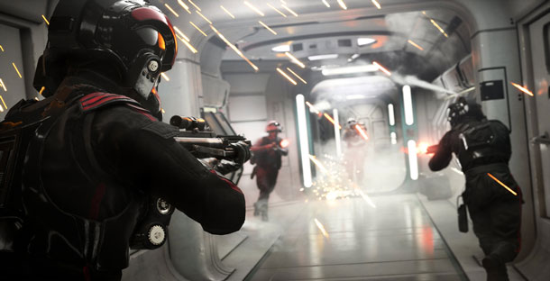
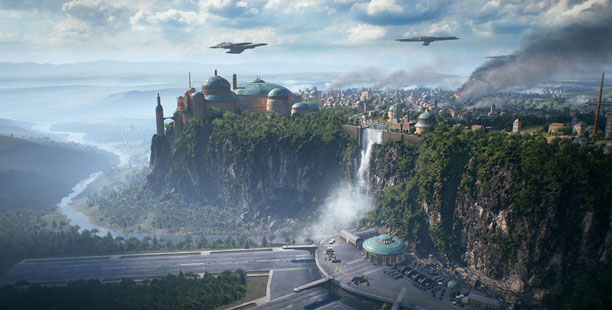
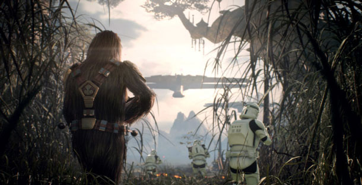

O novo Star Wars Battlefront 2 está ficando cada vez mais parecido com o game de mesmo nome lançado em 2005. Com mais mapas, heróis e veículos disponíveis em cada cenário, a continuação do jogo de 2015 é promissora. Em um novo trailer publicado no canal oficial da EA para jogos de Star Wars, são apresentadas as diferenças entre o novo game e seu antecessor.
A primeira grande novidade do título mais recente da série Battlefront é o modo História, que vai servir como uma ponte entre "O Retorno de Jedi" e "O Despertar da Força". Nesta campanha, o jogador assume o papel de Iden Versio, uma oficial do Império que acaba de ser informada sobre a morte do Imperador e precisa, sob as ordens de um superior, retaliar. Dada a importância dos acontecimentos que dão base para o enredo, este deve ser um modo que recebeu bastante atenção dos desenvolvedores e pode compensar pela falta de um modo single-player empolgante no primeiro jogo.
Além disso, há o já citado aumento na variação de personagens, mapas e veículos de combate, tanto por terra quanto pelo ar. Serão 18 campos de batalha, 14 personagens especiais divididos entre heróis e vilões icônicos da saga e 39 veículos contando naves e unidades de combate gigantes como AT-AT Walkers, por exemplo. Os números ainda estão abaixo do homônimo lançado para PlayStation 2, mas já representam quase o triplo das opções disponíveis em Battlefront (2015) -- e o mais importante é que este conteúdo não será cobrado a parte.
Para poder jogar com os heróis e vilões ou com naves lendárias nas batalhas que acontecem no espaço, o jogador precisa coletar pontos de batalha suficientes. Ao contrário de Battlefront (2015), o novo game traz de volta o conceito presente no jogo de 2005 em que a condição para controlarmos um personagem mais poderoso por tempo limitado é o nosso desempenho em cada partida.
Essa mecânica será utilizada também para nos dar acesso a classes mais poderosas de soldados. Enquanto no game de 2015 o jogador escolhe a arma que prefere para entrar no combate, o jogo de 2017 -- assim como o de 2005 -- vai contar com classes que possuem habilidades e armamentos específicos. Algumas classes vão estar disponíveis desde o início de cada partida e outras só serão liberadas após mais pontos serem coletados.
O retorno de outras eras de Star Wars, não apenas a do império, é outro passo na mesma direção que seguia o game de PlayStation 2. Desta vez o jogador poderá, inclusive, controlar personagens mais recentes da franquia como Kylo Ren e Rey.
Star Wars Battlefront 2 (2017) será lançado no dia 17 de novembro para PlayStation 4, Xbox One e PC. Confira a análise do IGN Brasil sobre o jogo de 2015.